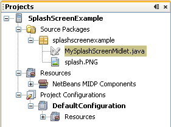
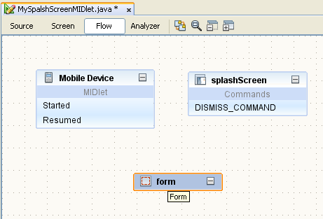

Visual Mobile Designer Custom Components: Using Splash Screens in Java ME Applications
Splash screens are used to enhance the look and feel of an application. Typically, you use a splash screen when the program starts,
or to display a logo or branding information. It gives users the first impression of your application. The Visual Mobile Designer (VMD)
in NetBeans includes the SplashScreen custom component in the VMD palette. This brief example shows you how to create a new Java ME project
using NetBeans that uses the SplashScreen component. It will also explain how to use the features to design and implement your own splash
screens using this feature.
If you are new to mobile application development in NetBeans, you should start with the NetBeans Java ME MIDP Quick Start Guide before continuing.
Contents

To complete this tutorial, you need the following software and resources:
Installing and Running the Sample Application
Before we begin, you might want to see final result of the tutorial.
Take the following steps to install SplashScreenExample application:
- Download
SplashScreenExample.zip.
- Unzip the file.
- The Projects window should look like the following:

- In the Projects window, right-click the project node and choose Run Project
(or press F6). As the application runs, an emulator window opens and
displays the application running in the default device emulator.
- In the Emulator window, click the button underneath "Launch." The emulator displays a splash screen, as shown:

top
Creating a Mobile Application with the SplashScreen Custom Component
Now that you have seen the SplashScreen component in action, let's go back
to the beginning and create this application. To create the application do the following:
- Create the SplashScreen project
- Add Packages and a Visual MIDlet to the Project
- Add components to MySplashScreenMidlet
- Change the Timeout Property of the SplashScreen Component
- Add Exit and Back Commands to the Form Component
- Add an Image Resource
- Bind an Image to a Component
- Connect the Components
- Run the Project
Creating the SplashScreen Project
- Choose File > New Project (Ctrl-Shift-N). Under Categories, select
Java ME. Under Projects, select Mobile Application and click Next.
- Enter
SplashScreenExample in the Project Name field. Change
the Project Location to a directory on your system. This directory is called $PROJECTHOME.
- Uncheck the Create Hello MIDlet checkbox. Click Next.
- Leave the Sun Java Wireless Toolkit 2.5.2 as the selected Emulator Platform. Click
Finish.
Adding Packages and a Visual MIDlet
to the Project
- Choose
SplashScreenExample project in the Project Window,
then choose File > New File (Ctrl-N). Under Categories, select Java. Under File Types, select Java Package. Click Next.
- Enter
splashscreenexample in the Package Name field. Click Finish.
- Choose the
splashscreenexample package in the Project window, then choose File > New File (Ctrl-N). Under Categories, select MIDP.
Under File Types, select Visual MIDlet. Click Next.
- Enter
MySplashScreenMIDlet into MIDlet Name and MIDP Class Name fields. Click Finish.
Adding Components to MySplashScreenMidlet
- Switch your Visual MIDlet to the Flow window. Drag the following
Screen components from the Palette and drop them in the Flow Designer:
- The Splash Screen component when viewed in the Flow Designer:

- Select the splashScreen1 component. In the Properties of this component,
change the Title to
Splash Screen and enter Wait for
10 sec. or press a key to close it into the Text property.
- Select the form component to and change its Title property to
Form.
- Double-click the form component in the Flow window to switch
to the Screen Designer
- Select the StringItem component from the Form Items section of the Palette,
then drag and drop it into form1.
- Double-click stringItem1 inside Screen Designer. Delete the stringItem1 title
and change
<Enter Text> to Press Exit to close
application.
Changing the Timeout Property of the SplashScreen Component
- Choose Flow at the top of the Visual Mobile Designer window to re-open the Flow Design view.
- Select the Splash Screen component.
- In the Properties Window find the Timeout property and change it from
5000 to 10000 milliseconds.
Adding Exit and Back Commands to the Form Component
Choose the Exit Command from the Commands section in the Palette, and
drag it into the form1 component.
Adding an Image Resource
-
Copy the splash.png file
to the
$PROJECTHOME/src/splashscreenexample folder.
- Right-click the splashScreen component and choose Properties in the popup menu.
-
In the Properties dialog box, click the ellipsis button (
 ) against the Image property.
) against the Image property.
- In the Image dialog box, click Add.
The image1 component is added.
- In the Open dialog box specify the path to the copied splash.png file.
The image is added.
- Click OK to close the Open dialog box.
- Click Close to close the Properties dialog box.
Binding an Image to a Component
- Select the splashScreen1 component.
- In the Properties Window, use the drop-down menu to change the Image
property to image1.
Double-click the component to open the splash screen in the Screen Designer.
It should look like the folowing screen.

Connecting Components
In the Flow view, click on the Start Point and drag the arrow
to the splashscreen1 component. In the same manner, connect the components
as shown in the following graphic.

Running the Project
Press F6 to run the main project. Alternatively you could select Run > Run Main Project.
Javadoc for the SplashScreen Component
The NetBeans IDE provides API Javadocs for the SplashScreen component, as well as other components you can use in the VMD. To
read the Javadocs for the SplashScreen component:
- Place the cursor on the SplashScreen component in the source code and press Ctr-Shift-Space (or choose Source > Show Documentation).
The Javadoc for this element displays in a popup window.
- Click the Show documentation in external web browser icon (
 ) in the popup window to view the detailed information about the SplashScreen component in your browser.
) in the popup window to view the detailed information about the SplashScreen component in your browser.
top
See Also
top